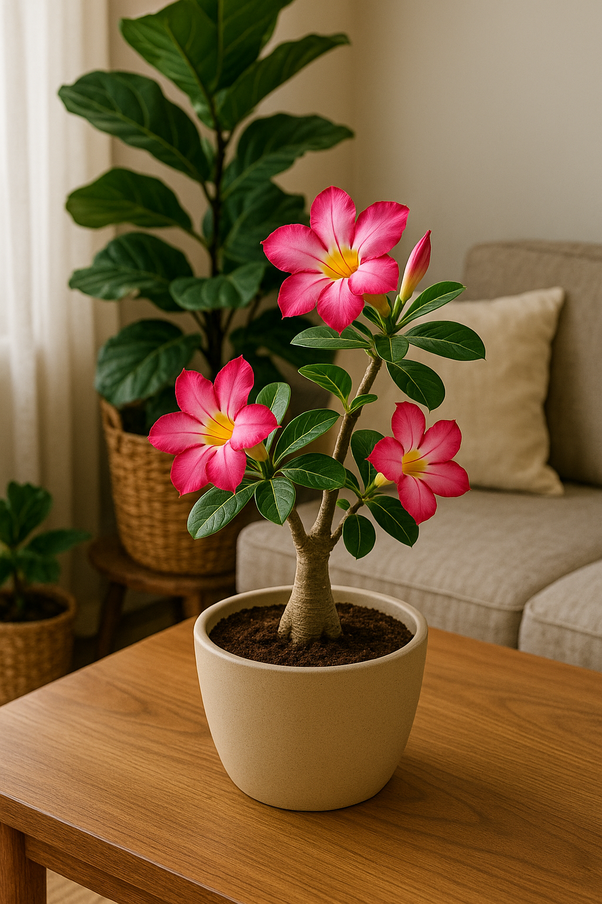

🌺 Rosa do Deserto: a beleza perigosa que exige distância felina
Linda, exótica e absolutamente letal para gatos. A Rosa do Deserto encanta com sua aparência escultural e flores que parecem pintadas à mão. Mas por trás dessa beleza impressionante está um perigo silencioso: sua seiva e folhas são altamente tóxicas para os felinos.
Mesmo pequenas quantidades podem causar sintomas graves como vômitos, salivação intensa e alterações neurológicas. Por isso, se você convive com gatos em casa, o ideal é manter essa planta longe dos ambientes internos — ou optar por versões artificiais apenas decorativas.
A boa notícia é que existem alternativas visuais semelhantes, como a suculenta Calandiva ou algumas espécies de kalanchoes, que podem trazer cor e forma ao espaço sem representar um risco para os pets.
Se a Rosa do Deserto for uma paixão inegociável, cultive-a em áreas externas, longe do alcance dos animais, e sempre lave bem as mãos após o manuseio. Prevenção é o primeiro passo para um lar verdadeiramente seguro.
⚠️ Bonita, mas perigosa. Quando o assunto é convivência com gatos, beleza precisa vir acompanhada de responsabilidade.
← Voltar para o blog